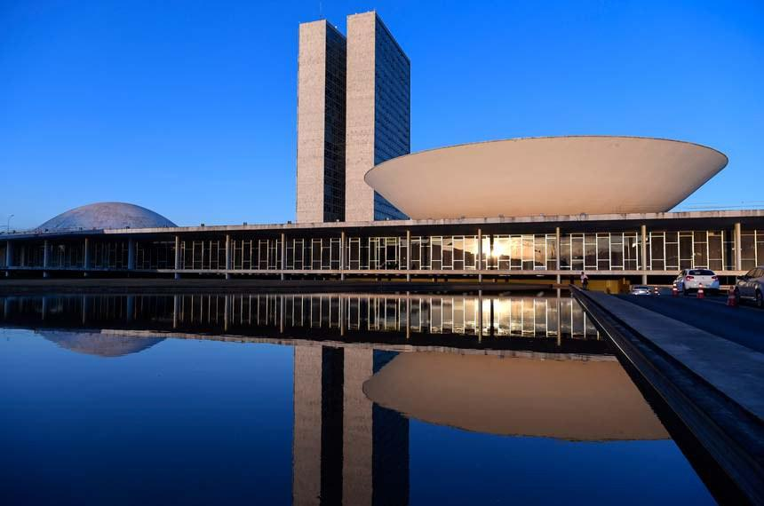

O Palácio do Planalto é a sede oficial do Poder Executivo do Brasil e está localizado na Praça dos Três Poderes, em Brasília. Inaugurado em 1960 juntamente com a nova capital federal, o edifício foi projetado pelo renomado arquiteto Oscar Niemeyer e é considerado uma das obras mais importantes da arquitetura moderna brasileira. No Palácio do Planalto trabalha o Presidente da República, responsável pela administração do país e pela coordenação das ações do governo federal. O local também abriga reuniões ministeriais, cerimônias oficiais e encontros com autoridades nacionais e internacionais. Além de sua importância política, o Palácio do Planalto é um dos principais pontos turísticos de Brasília, destacando-se por suas linhas arquitetônicas elegantes e por representar um símbolo da democracia e da administração pública brasileira. Sua localização na Praça dos Três Poderes reforça a separação e a harmonia entre os poderes Executivo, Legislativo e Judiciário, pilares fundamentais da organização política do Brasil.
Além de sua relevância institucional, o Palácio do Planalto também possui forte valor simbólico e cultural, sendo considerado um ícone da arquitetura e do urbanismo de Brasília. Sua construção fez parte do projeto de modernização e interiorização do Brasil, liderado por Juscelino Kubitschek, que buscava integrar o território nacional e consolidar a nova capital como centro político e administrativo. O edifício é cercado por elementos que reforçam sua monumentalidade, como a rampa presidencial, utilizada em momentos solenes, e o espelho d’água que reflete suas linhas arquitetônicas, transmitindo a ideia de leveza e transparência. Além disso, o Palácio abriga obras de arte e mobiliário que representam a identidade brasileira, tornando-se também um espaço de expressão cultural. A visitação pública é permitida em determinados dias, o que aproxima a população do centro do poder e fortalece a noção de democracia participativa. Dessa forma, o Palácio do Planalto não é apenas um espaço de trabalho governamental, mas também um símbolo da história, da cultura e da política nacional, integrando-se ao conjunto arquitetônico da Praça dos Três Poderes e reafirmando o papel de Brasília como capital planejada e representativa da nação.